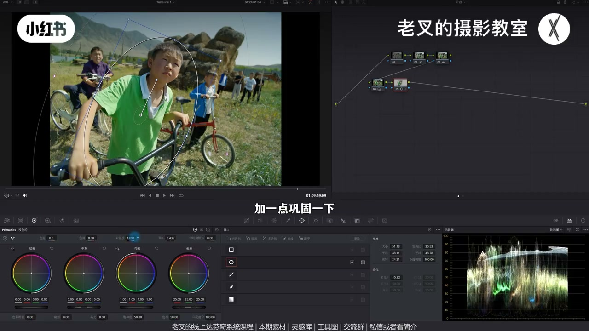
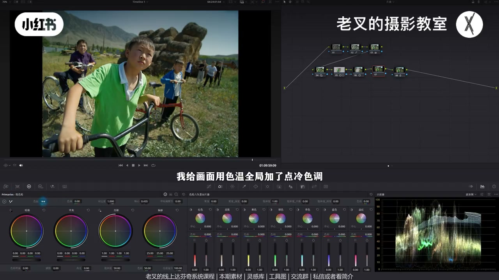
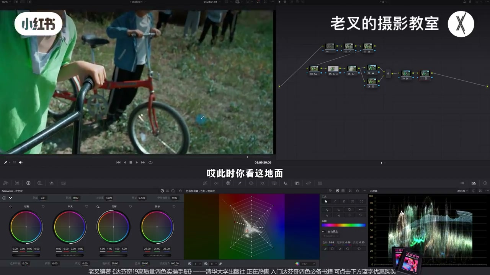
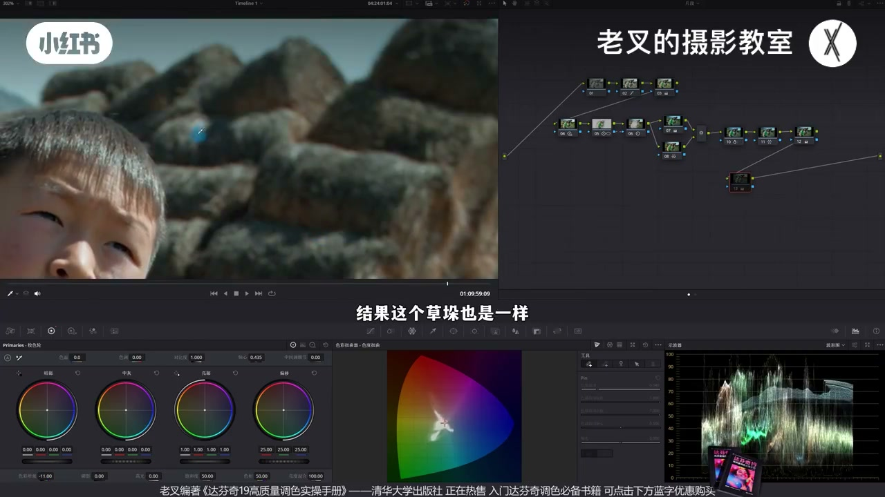
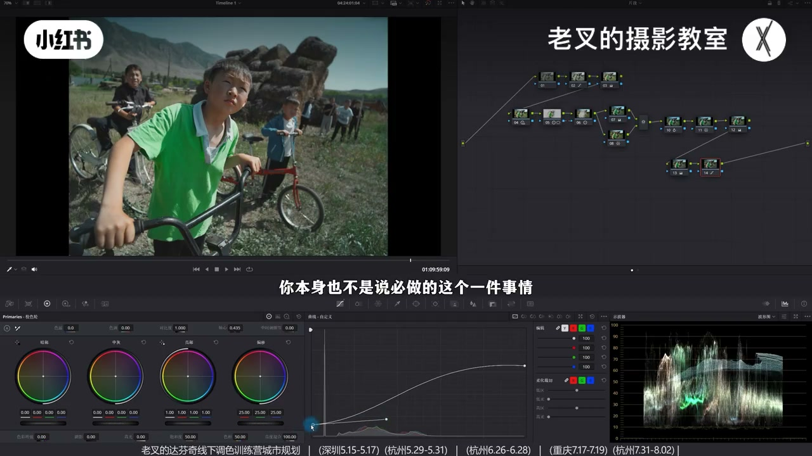

内容要点
用「沧桑」形容故事感：还原后 HDR 压 Shadow/Light、抬 Highlight 略暗拉开反差；C 位遮罩加对比，外部节点压四周——四周降反差反衬主体。天空：先全局加冷让白边也成蓝，再加蓝青密度压暗，并行纠肤。归整黄绿杂色后再后插加暖；色彩增强降低饱和杂色并回饱和救中高饱和；柔和对比度收两端护中间调。
知识结构
HDR 略暗+抬 Highlight；主体对比、外部压四周反衬。
先加冷染色再密度；并行纠肤防僵尸蓝。
蓝转青、黄降饱和偏橙；后插加暖不扩大色差。
色彩增强去低饱和脏色+抬饱和回救；样条线柔和对比度。
纪实沉稳=略暗大反差+主体突出+天空不抢。压天要先让「白」变成「有色」再加密度。染色后必查低饱和杂色；加暖放在归色之后。
00:00-01:50沧桑影调：HDR + 主体/四周此消彼长
故事感用不太恰当的词「沧桑」。曲线拉高低+饱和还原。岁月感要整体反差拉开且不过亮：HDR 降 Shadow/Light，再抬 Highlight——小男孩更「经历过」。
C 位遮罩略加对比；Alt/Option+O 外部对比+轴心压四周。四周波形下压=降反差，反衬中间强化，小力度也够用。

01:50-03:35天空：先染蓝再密度；并行护肤
希望天空不比人亮。只加蓝青密度：白斑不动、压不够。应在密度节点前 Shift+S：全局降色温、略减色调带青绿，让白边也染蓝，再加密度整片下降，并略降饱和。
全局加蓝伤肤：并行节点加肤饱和、色相略偏红纠回。三节点开关看压天效果。

03:35-05:10归整杂色后再加暖
蓝略转青降饱和；地面黄降饱和偏橙——色相差变少更干净。若仍偏冷，不要回 7 号加暖（会放大蓝/黄/绿差别），应后插新节点基于已干净分布略加色温。
有明确阳光时可略暖。素材知识分享平台自取。

05:10-07:36色彩增强去脏；柔和对比度收束
头发/草染上怪蓝等：降低色彩增强去掉低饱和杂色，再略抬饱和滑块救中高饱和（黑架等归黑）。力度勿大，增强对低饱和极敏感。
柔和对比度：高光下压波杆上提，暗部上提波杆下压——收两端、护中间调。拉不准可不做。节点多但逻辑清。


完整转录（270段）
以下文本由 Whisper medium 模型自动转录，可能存在少量识别误差，已尽可能修正。
怎么让你的视频画面更有故事感呢
我会用一个不太恰当的词来形容啊
就是让画面中的人物多一些沧桑的感觉
看到我们这个画面
虽然最前面这一期的节点可能会有点多
但是理清了逻辑之后其实也不难理解
看到灰片
我们先给他做下简单的还原
还原其实一点都不复杂
我一贯以来都是以手搓为主的
用曲线把高光和暗波拉到位
然后再给画面加点饱和度
这样就做好了
还原还是非常简单的
然后我们就要开始影调的塑造
要呈现出沧桑或者岁月的感觉
其实就需要整体的反差稍微拉开一些
而且你画面整体也不能过量
所以我在第二排的第一个节点
用HDR色轮降低了Shadow色轮的曝光
以及Light色轮的曝光
让整体能够稍微往暗的一点走
你按了钟你就发现这个岁月感觉更强了
对不对
但是反差也稍微有点降低了
那我们就再稍微提高一点Highlight色轮的曝光
好
那此时在中间这小男孩是不是感觉经历了很多啊
那初步的效果有了
但是我觉得还不是特别够
所以我会再来一个节点
给中间这个C位的男生给他画一个遮罩
然后给他再加一点点对比度
不要加太多
我们稍微加一点就行了
加一点巩固一下
好
大概到这个程度就差不多
力度不会太大的
因为我们还需要按住Alt或者Option加O
建立一个外部节点
就是四周的范围
把四周稍微压暗一些
也是通过增加对比度的行为
再配合轴心
让四周能够暗一些
好
大概到这个程度
整体压暗或者提亮
这个行为本质上就是在降低反差
我们看到四周的波旋图的变化
是不是在往下压
而往下压就是在减少他们的反差
也就是说我们是通过四周降低反差的行为
来反衬中间主体强化的力度
你会发现就能够允许我们用较小的调整
来获得不错的效果
那这三个节点的行为
是不是就从影调层面
给画面带来一个非常大的改观了
对吧
接下来我们就开始动颜色
我们一般希望天空不要太亮
如果能够比人物还暗的话
那整体的味道就非常好了
可是目前的天空
也就是在波旋图中的这一坨
这一坨蓝色还是比较亮的
那如果我们此时再来一个节点
通过增加蓝色和青色的密度
我们我把波旋图放在这吧
通过增加蓝色和青色的密度
你发现天空被压暗了
对不对
可是你看这一部分
这里有一小坨没变化
因为它这里太白了
所以就导致整个天空的压暗的程度不太够
我们需要让整个天空都往下降
那这时候该怎么办呢
当然我们也需要给它再稍微降一点饱和度
那该怎么办呢
这时候我们应该在7号节点
也就是我们增加青色和蓝色密度的节点之前
按住Shift加S往前建立一个节点
我要让这里的天空也是蓝色
而不是白色
所以我给画面用色温
全局加了点冷
色调也稍微减一减
让它带点青绿色
好
这时候我们就让这部分天也染上了蓝色
所以我们在后面增加密度的行为
就能让整个天空都往下降了
你发现没有
这个地方也往下压了
因为它有蓝色
这个思路其实很好理解
但是全局加蓝会让人物的皮肤也受到影响
对吧
原本的皮肤是这样的
弄完了之后变成了这样
反而不舒服
那怎么办呢
所以我们需要在7号节点
就是全局加蓝的这个节点
按住L或者是Option加P
建立一个并行节点
在并行节点下面这个节点中
把肤色给它稍微纠正回来一点
增加点饱和度
再稍微色向网红的方向走一点
大概是这个程度
我们来放大看一下
肤色就被我们纠正回来了
对吧
包括手臂也被我们纠正回来
变成一个正常的颜色
这样我们就能够在保护肤色的前提下
压暗天空
我把这三个节点再开关一下
看看
效果还是可以的
对吧
这个思路稍微有点绕
大家可以把素材领取过去之后
一起操作感受一下
素材我已经传到历史上的分享平台
私信或者看我剪辑
就可以加入后免费自取
还有达福星的线上系统
各种各样的线下调色训练营
在我们已经实现了天空压暗的前提下
我们就可以继续的给画面颜色做优化
我觉得可以让蓝色稍微走点青色
让画面的颜色能够干净一些
否则你会发现画面中又有黄又有绿
还有天空的蓝
颜色还是有点多的
我这里新建了一个节点
其实你放在10号节点做
也是没问题的
我主要是给大家看到这个区别
首先我把天空稍微给它蓝色
降低点饱和度
让它稍微往青色走一点
那天空的颜色就变少了
能变干净一点
而且衣服上的领子的颜色也能够回来
再一个就是地面的黄色
我把黄色饱和度给它往下一降
然后让它稍微往橙色方向走一点
此时你看
这地面的颜色是不是变少了
天空的颜色也不会那么独立了
效果还是不错的
这时候很有意思的一个点
如果你觉得画面整体稍微冷了一些
我们不要回到前面任何节点去调
而应该在后面新建一个节点
给画面稍微加一点点色温
让它带上一点暖色
这里加的色温是基于目前画面已有颜色分布来做的
它不会产生更多的问题
如果说你在7号节点去做的话
原本的这些颜色
我们刚刚还记得吗
有天空的蓝
有地面的黄
还有这些草的绿
你如果在前面7号节点加的暖
就会扩大这些颜色的区别
而我们在后面新建的这个节点
是在我们已经减少了这些色相差的前提下
加的暖颜色是在干净的技术上加的
所以在这个时候我们就不要回去做了
而加暖这个行为
当然完全看你自己可做可不做
我觉得对于这个画面来讲
稍微暖一点好看
因为有明确的阳光
到这里我们颜色就大体调好了
我们可以把颜色节点开关看一下效果
第二排所有的节点都做下开关
效果也挺好的
但是我们仔细看画面之后产生了一个新的问题
我们放大看人物的头发
这个头发它对我们染上了更多的颜色
对吧
特别是个蓝色不舒服
而且背后的这个草多
也有一些很怪的颜色
我们需要把它的颜色给减少
也就是说我们需要降低低饱和部分的饱和度
我们可以再来一个节点给它拉到第三排
我们很少会用到第三排
但是我们这次必须要用到第三排
否则放不下了
我们在新建的这个节点中
稍微降低点色彩增强划快
来把这些低饱和部分的颜色给它去了
我们看到头发是不是变回了没有颜色的结果
这个草多也是一样
颜色都变干净了
而且你看这个自行车
这个架子上的颜色也变成了该有的黑色
可是像这种中高饱和部分的颜色也受到了牺牲
因为色彩增强
也是全局改变饱和度的一个工具
所以这时候我们就需要再稍微提高一点饱和度划快
我们就可以把中高饱和部分饱和度给它救回来
同时还能够保留在低饱和部分颜色降低的这个行为
这是调整后
这是调整前
对吧
效果还是非常好的
颜色就能够变得干净了
这一点其实大家一定要在自己调色的过程中
有意的去观察一下
画面中会不会因为你的染色
产生了很多新的杂色的问题
而且这个色彩增强和饱和度这个组合
我们之前讲过非常多次
还是比较好用的
但是要注意色彩增强
因为对低饱和太敏感了
所以你力度调太大的话
容易让画面产生不太舒服的一个结果
所以力度不要太大
要根据画面情况来
最后我们可以给画面加一个柔和对比度
柔和对比度
我们后面有机会再展开讲
其实这个东西还是比较麻烦的
我们可以把高光这一端往下压
再把高光延伸出来的波感给它往上提
再把暗部这一端给它往上提
把暗部延伸出来的波感给它往下压
很多朋友会跟我说这个柔和对比度拉得不到位
这个确实
因为我觉得这个行为
你本身也不是说必做的一件事情
如果真拉不到位的话就不拉了
我们重点的目的是希望能够让画面
不要特别亮的那个情况
同时还能够保护中间调的反差
不会受到影响
我们看到暗部这一端被我们压缩了
压灰了
对吧
高光这一端也收缩了
而中间调部分
它的反差基本上没有任何改变
你就可以让它稍微再亮一些
大概到这个程度
我觉得挺好了
这时候我们就调完了
我们把画面从这样变成了这样
效果还是非常好的
对吧
节点确实有点多
但是思路理清的其实还好
所以大家别忘了领取之后一起练练手
剪到这里
如果觉得对你有帮助的话
还希望多多赞联
好了
这期就到这里
拜拜溜